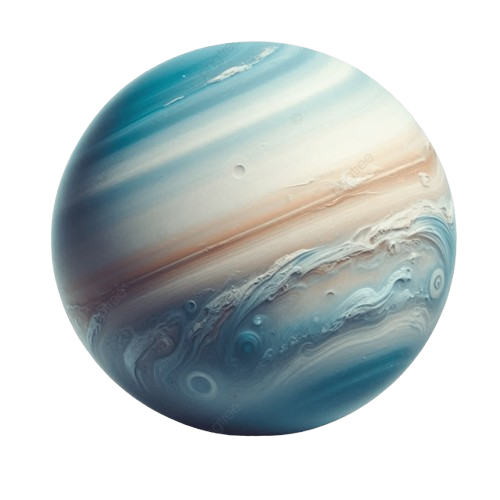

URANO

Urano es el séptimo planeta desde el Sol, ubicado a una distancia media de aproximadamente 2,870 millones de kilómetros.
CARACTERÍSTICAS PRINCIPALES
ANILLOS Y LUNAS
HISTORIA Y EXPLORACIÓN
Urano es el tercer planeta más grande del Sistema Solar en términos de diámetro,
con aproximadamente 50,724 kilómetros.
Urano es un gigante helado compuesto principalmente de hidrógeno y helio, con una gran proporción de agua, amoníaco y metano en forma de hielo.
El color azul verdoso de Urano se debe a la presencia de metano en su atmósfera, que absorbe la luz roja y refleja la luz azul.
La atmósfera de Urano está compuesta principalmente de hidrógeno y helio, con un manto de agua, amoníaco y metano en forma de hielo.
Urano es un gigante helado compuesto principalmente de hidrógeno y helio, con una gran proporción de agua, amoníaco y metano en forma de hielo.
El color azul verdoso de Urano se debe a la presencia de metano en su atmósfera, que absorbe la luz roja y refleja la luz azul.
La atmósfera de Urano está compuesta principalmente de hidrógeno y helio, con un manto de agua, amoníaco y metano en forma de hielo.
Urano tiene un sistema de anillos delgados y oscuros que fueron descubiertos en
1977. Hay 13 anillos conocidos, y el sistema de anillos de Urano es menos prominente que el de
Saturno.
Urano tiene al menos 27 lunas conocidas. Las lunas más grandes son Miranda, Ariel, Umbriel, Titania y Oberón.
Urano tiene al menos 27 lunas conocidas. Las lunas más grandes son Miranda, Ariel, Umbriel, Titania y Oberón.
- Voyager 2 (1986): La única misión que ha visitado Urano es la Voyager 2 de la NASA, que
sobrevoló el planeta en 1986. La misión proporcionó imágenes detalladas y datos sobre Urano, sus
anillos y lunas, y reveló muchas características sorprendentes.